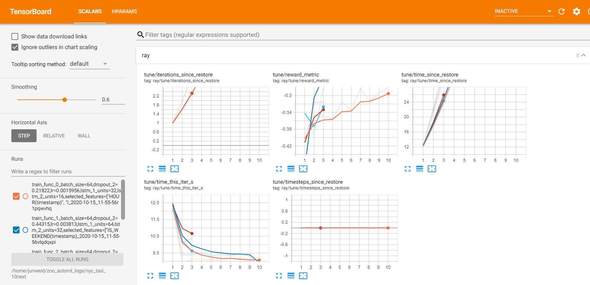
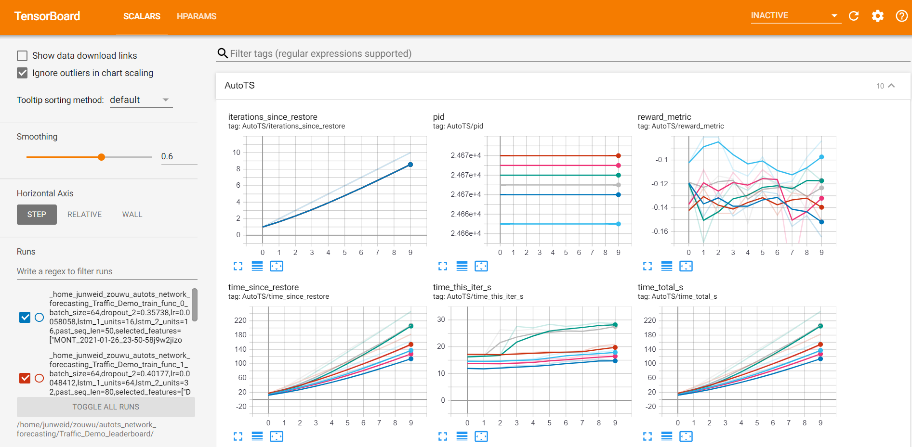
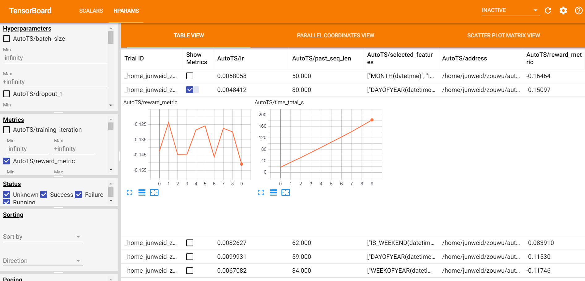

Visualization
Visualization
AutoML visualization Overview
AutoML visualization provides two kinds of visualization.
- During the searching process, the visualizations of each trail are shown and updated every 30 seconds. (Monitor view)
- After the searching process, a leaderboard of each trail's configs and metrics is shown. (Leaderboard view)
Note that: AutoML visualization is based on tensorboard and tensorboardx. They should be installed properly before the training starts.
Monitor view
Before training, start the tensorboard server through
tensorboard --logdir=<logs_dir>/<job_name>/
logs_dir is the log directory you set for your predictor(e.g. TimeSequencePredictor in Automated Time Series Prediction). It is default to "/home/\<username>/zoo_automl_logs", where username is your login username. job_name is the name parameter you set for your predictor.
The data in SCALARS tag will be updated every 30 seconds for users to see the training progress.

Leaderboard view
After training, start the tensorboard server through
tensorboard --logdir=<logs_dir>/<job_name>_leaderboard/
where logs_dir and job_name are the same as stated in Monitor view.
A dashboard of each trail's configs and metrics is shown in the SCALARS tag.

A leaderboard of each trail's configs and metrics is shown in the HPARAMS tag.

Use visualization in Jupyter Notebook
You can enable a tensorboard view in jupyter notebook by the following code
%load_ext tensorboard
# for scalar view
%tensorboard --logdir <logs_dir>/<job_name>/
# for leaderboard view
%tensorboard --logdir <logs_dir>/<job_name>_leaderboard/